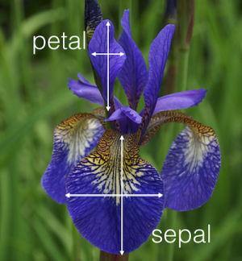
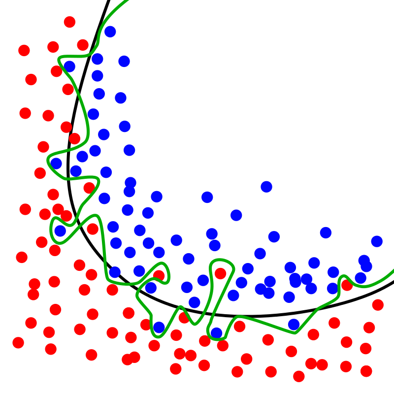

Machine Learning — KNN using scikit-learn¶
Sekilas tentang KNN (K-Nearest Neighbors)¶
Secara [sederhana] K-nearest neighbors atau knn adalah algoritma yang berfungsi untuk melakukan klasifikasi suatu data berdasarkan data pembelajaran (train data sets), yang diambil dari k tetangga terdekatnya (nearest neighbors). Dengan k merupakan banyaknya tetangga terdekat. KNN ini dapat kita temukan bilamana kita sedang belajar Machine Learning. ML intinya berkaitan dengan automasi atau bagaimana sebuah machine dapat belajar dari contoh-contoh yang kita berikan, terus memprediksi sesuatu yang sesuai dengan contoh-contoh tadi.
Dalam menentukan nilai k, sebaiknya kita gunakan nilai ganjil, karena jika tidak, ada kemungkinan kita tidak akan mendapatkan jawaban
Secara garis besar dalam dunia data mining atau data science terdapat 2 pendekatan untuk melakukan teknik — teknik data mining. Supervised learning adalah sebuah pendekatan dimana sudah terdapat data yang dilatih, dan terdapat variable yang ditargetkan sehingga tujuan dari pendekatan ini adalah mengkelompokan suatu data ke data yang sudah ada, lain halnya dengan unsupervised learning, unsupervised learning tidak memiliki data latih, sehingga dari data yang ada, kita mengelompokan data tersebut menjadi 2 bagian atau 3 bagian dan seterusnya.
Iris datasets¶
Kali ini saya menggunakan Python untuk melakukan coba-coba model. Disini saya menggunakan dataset iris. Dataset ini sangat populer digunakan untuk latihan pertama (R atau python). Iris biasanya sudah tersedia didalam modul sklearn (lengkap dengan target dan feature).
# code untuk install modul sklearn pip install -U scikit-learn #jika menggunakan pip yang ada di python conda install scikit-learn #jika menggunakan anaconda
Terdapat 150 observasi (row) dengan feature/independent variable sebanyak 4 (Panjang sepal, lebar sepal, panjang petal, dan lebar petal). 150 observasi tersebut dibagi menjadi 50 observasi pada masing-masing spesies (Iris setosa, Iris versicolor, dan Iris virginica). Pada data iris, kita tidak akan menjumpai nilai null (N/A), sehingga kita tidak perlu capek-capek untuk merapikan data tersebut.

Dengan data iris hasil download dengan format file csv. Modul Pandas dapat mempermudah kita dalam pemanggilan dataset yang kita butuhkan.
KNN dengan python¶
Langkah pertama adalah memanggil data iris yang akan kita gunakan untuk membuat KNN. Misal masing-masing target/spesies kita berikan nilai yang unik, setosa=0, versicolor=1, virginica=2. Pada gambar di bawah ini dapat dilihat jika kita menggunakan K=1 dan data baru a=[1,2.7,3.6,4.2]. a mewakili masing-masing nilai feature. Hasilnya adalah 2, yaitu Iris virginica.
In [3]: from sklearn.datasets import load_iris iris=load_iris() x=iris.data y=iris.target from sklearn.neighbors import KNeighborsClassifier import numpy as np knn=KNeighborsClassifier(n_neighbors=1) #define K=1 knn.fit(x,y) a=np.array([[1.0,2.7,3.6,4.2]]) knn.predict(a) Out[3]: array([2])
Jika saya ganti nilai k=3 dengan nilai data a tidak saya rubah, maka hasil menjadi 1, yaitu Iris versicolor.
In [8]: from sklearn.datasets import load_iris iris=load_iris() x=iris.data y=iris.target from sklearn.neighbors import KNeighborsClassifier import numpy as np knn=KNeighborsClassifier(n_neighbors=3) #define K=3 knn.fit(x,y) a=np.array([[1.0,2.7,3.6,4.2]]) knn.predict(a) Out[8]: array([1])
Untuk menghindari overfitting, kita dapat membagi iris dataset tadi menjadi data train dan test. Perbandingannya 80%:20%, sehingga bakal ada x buat training dan testing, begitu juga dengan ‘y’ bakal ada y buat training dan testing. Jadi dari 150 total observasi pada data iris, terdapat 120 observasi pada data train dan 30 observasi pada data testing. Script pemisahan data train dan test dapat dilihat di bawah.
from sklearn.model_selection import train_test_split X_train, X_test, y_train, y_test = train_test_split(X, y, test_size=0.20)

Cross-validation¶
Cross-validation (CV) adalah metode statistik yang dapat digunakan untuk mengevaluasi kinerja model atau algoritma dimana data dipisahkan menjadi dua subset yaitu data proses pembelajaran dan data validasi / evaluasi. Model atau algoritma dilatih oleh subset pembelajaran dan divalidasi oleh subset validasi. Selanjutnya pemilihan jenis CV dapat didasarkan pada ukuran dataset. Biasanya CV K-fold digunakan karena dapat mengurangi waktu komputasi dengan tetap menjaga keakuratan estimasi.

Misal nih, data kita ada 150. Ibarat kita pake K=5, berarti kita bagi 150 data menjadi 5 partisi, isinya masing-masing 30 data. Jangan lupa, kita perlu menentukan mana yang training data dan mana yang test data. Karena perbandingannya 80:20, berarti 120 data adalah training data dan 30 sisanya adalah test data. Berdasarkan 5 partisi tadi, berarti bakal ada 4 partisi x 30 data = 120 training data. Dan sisanya ada 1 partisi test data berisi 30 data. Kemudian, experimen menggunakan data yang udah di partisi-partisi bakal diulang 5 kali (K=5). Tapi posisi partisi Test data berbeda ditiap iterasinya. Misal di iterasi pertama Test nya di posisi partisi awal, terus iterasi partisi kedua Test-nya di posisi kedua, dan seterusnya, pokonya gaboleh sama.
In [14]: import numpy as np import matplotlib.pyplot as plt import pandas as pd In [15]: url = "https://archive.ics.uci.edu/ml/machine-learning-databases/iris/iris.data" # Assign colum names to the dataset names = ['sepal-length', 'sepal-width', 'petal-length', 'petal-width', 'Class'] # Read dataset to pandas dataframe dataset = pd.read_csv(url, names=names) In [18]: X = dataset.iloc[:, :-1].values y = dataset.iloc[:, 4].values In [19]: from sklearn.model_selection import train_test_split X_train, X_test, y_train, y_test = train_test_split(X, y, test_size=0.20) In [20]: from sklearn.preprocessing import StandardScaler scaler = StandardScaler() scaler.fit(X_train) X_train = scaler.transform(X_train) X_test = scaler.transform(X_test) In [21]: from sklearn.neighbors import KNeighborsClassifier classifier = KNeighborsClassifier(n_neighbors=5) classifier.fit(X_train, y_train) Out[21]: KNeighborsClassifier(algorithm='auto', leaf_size=30, metric='minkowski', metric_params=None, n_jobs=None, n_neighbors=5, p=2, weights='uniform') In [23]: y_pred = classifier.predict(X_test) In [25]: from sklearn.metrics import classification_report, confusion_matrix print(confusion_matrix(y_test, y_pred)) print(classification_report(y_test, y_pred)) [[11 1 0] [ 0 8 0] [ 0 0 10]] precision recall f1-score support Iris-setosa 1.00 0.92 0.96 12 Iris-versicolor 0.89 1.00 0.94 8 Iris-virginica 1.00 1.00 1.00 10 micro avg 0.97 0.97 0.97 30 macro avg 0.96 0.97 0.97 30 weighted avg 0.97 0.97 0.97 30
Hasil running code diatas menunjukkan bahwa algoritma KNN yang telah kita lakukan dapat mengklasifikasikan semua observasi (30) dalam set test dengan akurasi 97%, yang artinya susdah sangat bagus. Meskipun algoritma KNN dilakukan sangat baik dengan dataset ini, jangan berharap hasil yang sama dengan semua dataset. KNN tidak selalu berkinerja baik dengan data yang memiliki dimensi tinggi atau yang memiliki feature yang sangat kategoris.
Menentukan nilai K¶
Nah sekarang kita akan mencari tahu nilai K berapa yang akan menghasilkan akurasi tinggi. Karena kita tahu sendiri pada algoritma KNN, penentuan nilai K sangatlah krusial. Kita akan melihat nilai K dari 1–40. Berikut code yang dapat kita gunakan:
In [14]: import numpy as np import matplotlib.pyplot as plt import pandas as pd In [15]: url = "https://archive.ics.uci.edu/ml/machine-learning-databases/iris/iris.data" # Assign colum names to the dataset names = ['sepal-length', 'sepal-width', 'petal-length', 'petal-width', 'Class'] # Read dataset to pandas dataframe dataset = pd.read_csv(url, names=names) In [18]: X = dataset.iloc[:, :-1].values y = dataset.iloc[:, 4].values In [19]: from sklearn.model_selection import train_test_split X_train, X_test, y_train, y_test = train_test_split(X, y, test_size=0.20) In [20]: from sklearn.preprocessing import StandardScaler scaler = StandardScaler() scaler.fit(X_train) X_train = scaler.transform(X_train) X_test = scaler.transform(X_test) In [21]: from sklearn.neighbors import KNeighborsClassifier classifier = KNeighborsClassifier(n_neighbors=5) classifier.fit(X_train, y_train) Out[21]: KNeighborsClassifier(algorithm='auto', leaf_size=30, metric='minkowski', metric_params=None, n_jobs=None, n_neighbors=5, p=2, weights='uniform') In [23]: y_pred = classifier.predict(X_test) In [26]: from sklearn.metrics import classification_report, confusion_matrix print(confusion_matrix(y_test, y_pred)) print(classification_report(y_test, y_pred)) [[11 1 0] [ 0 8 0] [ 0 0 10]] precision recall f1-score support Iris-setosa 1.00 0.92 0.96 12 Iris-versicolor 0.89 1.00 0.94 8 Iris-virginica 1.00 1.00 1.00 10 micro avg 0.97 0.97 0.97 30 macro avg 0.96 0.97 0.97 30 weighted avg 0.97 0.97 0.97 30 In [30]: error = [] # Calculating error for K values between 1 and 40 for i in range(1, 40): knn = KNeighborsClassifier(n_neighbors=i) knn.fit(X_train, y_train) pred_i = knn.predict(X_test) error.append(np.mean(pred_i != y_test)) In [31]: plt.figure(figsize=(12, 6)) plt.plot(range(1, 40), error, color='red', linestyle='dashed', marker='o', markerfacecolor='blue', markersize=10) plt.title('Error Rate Nilai K') plt.xlabel('Nilai K') plt.ylabel('Error rata-rata') Out[31]: Text(0, 0.5, 'Error rata-rata')
Dari hasil di atas kita dapat melihat bahwa yang memiliki nilai error rata-rata 0 adalah ketika nilai K sebesar 4, 6–24. Hasil ini dapat dijadikan pedoman ketika kita ingin menggunakan nilai K yang memiliki akurasi tinggi. Dari situ kita dapat meminimalisir kesalahan prediksi.
Selanjutnya?¶
Kita dapat menampilkan plot hasil klasifikasi data iris. Kemudian kita dapat melihat perubahan yang terjadi ketika nilai K berbeda. Langkah ini sangat membantu jika kita tidak dapat membayangkan bagaimana data tersebut bekerja.
In [32]: import numpy as np import matplotlib.pyplot as plt from matplotlib.colors import ListedColormap from sklearn import neighbors, datasets n_neighbors = 15 # import some data to play with iris = datasets.load_iris() # we only take the first two features. We could avoid this ugly # slicing by using a two-dim dataset X = iris.data[:, :2] y = iris.target h = .02 # step size in the mesh # Create color maps cmap_light = ListedColormap(['#FFAAAA', '#AAFFAA', '#AAAAFF']) cmap_bold = ListedColormap(['#FF0000', '#00FF00', '#0000FF']) for weights in ['uniform', 'distance']: # we create an instance of Neighbours Classifier and fit the data. clf = neighbors.KNeighborsClassifier(n_neighbors, weights=weights) clf.fit(X, y) # Plot the decision boundary. For that, we will assign a color to each # point in the mesh [x_min, x_max]x[y_min, y_max]. x_min, x_max = X[:, 0].min() - 1, X[:, 0].max() + 1 y_min, y_max = X[:, 1].min() - 1, X[:, 1].max() + 1 xx, yy = np.meshgrid(np.arange(x_min, x_max, h), np.arange(y_min, y_max, h)) Z = clf.predict(np.c_[xx.ravel(), yy.ravel()]) # Put the result into a color plot Z = Z.reshape(xx.shape) plt.figure() plt.pcolormesh(xx, yy, Z, cmap=cmap_light) # Plot also the training points plt.scatter(X[:, 0], X[:, 1], c=y, cmap=cmap_bold, edgecolor='k', s=20) plt.xlim(xx.min(), xx.max()) plt.ylim(yy.min(), yy.max()) plt.title("3-Class classification (k = %i, weights = '%s')" % (n_neighbors, weights)) plt.show()
3-Class classification (k = 15, weights = ‘uniform’)
3-Class classification (k = 15, weights = ‘distance’)
Kita juga dapat membuat code ketika menjadi dinamis, sehingga memungkinkan adanya interaksi ketika kita memasukkan data. Hanya dengan menambahkan beberapa perintah logika kita dapat melakukan hal tersebut.
import numpy as np from sklearn import neighbors, datasets from sklearn import preprocessing n_neighbors = 6 # import some data to play with iris = datasets.load_iris() # prepare data X = iris.data[:, :2] y = iris.target h = .02 # we create an instance of Neighbours Classifier and fit the data. clf = neighbors.KNeighborsClassifier(n_neighbors, weights='distance') clf.fit(X, y) # make prediction sl = input('Enter sepal length (cm): ') sw = input('Enter sepal width (cm): ') dataClass = clf.predict([[sl,sw]]) print('Prediction: '), if dataClass == 0: print('Iris Setosa') elif dataClass == 1: print('Iris Versicolour') else: print('Iris Virginica')